library(raster)Manejo y mejora de una imagen Landsat
Visualización RGB: Landsat 8
Se utiliza el paquete raster para el manejo de imagenes en R.
El paquete ráster proporciona tres estructuras ráster diferentes entre las que se elige en función de cuántas bandas necesite para una escena y cuántos archivos se necesiten:
raster() = un archivo, una banda.
brick() = un archivo, varias bandas. Comúnmente utilizado con imágenes RGB.
stack() = varios archivos, varias bandas (Landsat GeoTIFFs).
blue <- raster("./LC08_L1TP_016053_20201227_20201227_01_RT/LC08_L1TP_016053_20201227_20201227_01_RT_B2.TIF")
green <- raster("./LC08_L1TP_016053_20201227_20201227_01_RT/LC08_L1TP_016053_20201227_20201227_01_RT_B3.TIF")
red <- raster("./LC08_L1TP_016053_20201227_20201227_01_RT/LC08_L1TP_016053_20201227_20201227_01_RT_B4.TIF")Se procede a realizar una visualización de la imagen multiespectral.
rgb <- stack(red,green,blue)
names(rgb) <- c("Banda 2","Banda 3","Banda 4")
plotRGB(rgb, scale = 65535)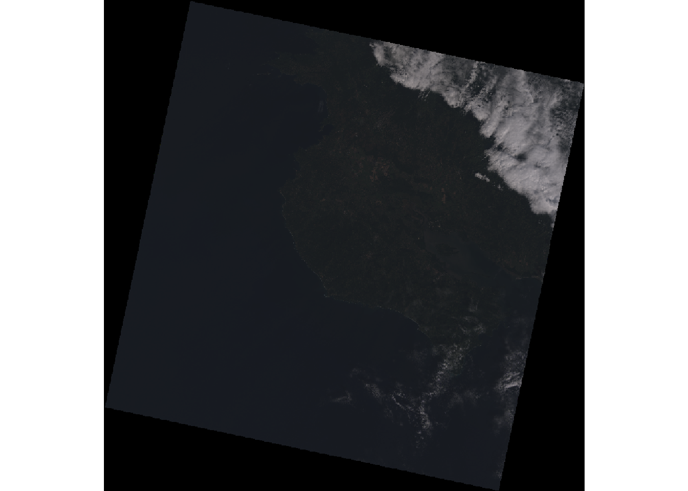
Recorte de la imagen al AOI (Area of Interest)
Las escenas de Landsat cubren un área terrestre de más de 200 kilómetros cuadrados, lo que, junto con el renderizado oscuro, puede dificultar la distinción de las ubicaciones que se muestran.
Si su enfoque está en un área bastante pequeña dentro de la escena, recortar la escena hará que sea más fácil ver dónde se encuentra y reducirá la memoria necesaria para procesar más la escena.
Pasos:
Es necesario crear un ráster vacío
raster()con las coordenadas de latitud/longitud superior izquierda (ymx y xmn) e inferior derecha (ymn y xmx).Se proyecta
projectExtent()ese ráster en el sistema de coordenadas proyectadas del rasterStack de origen.Se corta
crop()el rasterStack de origen hasta la extensión proyectada.Se plotea
plotRGB()el rasterStack recortado.
boundary = raster(ymx=10.723775172794, xmn=-85.616202153649,
ymn=10.255772218271, xmx=-85.144352599413)
boundary = projectExtent(boundary, rgb@crs)
liberia = crop(rgb, boundary)
plotRGB(liberia)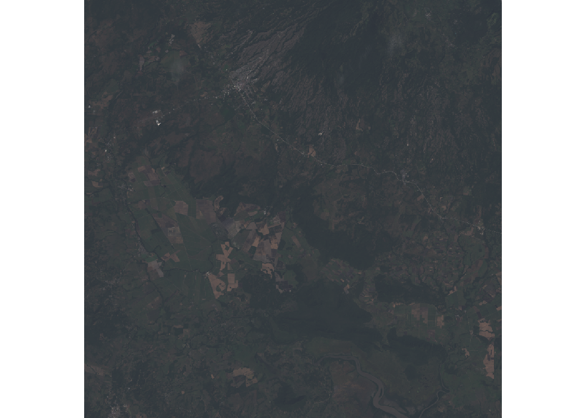
Técnicas de mejoramiento de imágenes satelitales
Mejora radiométrica
El realce radiométrico se ocupa de los valores individuales de los píxeles de la imagen. Se diferencia de la mejora espacial, que tiene en cuenta los valores de los píxeles vecinos.
| Algorítmo | Ecuación | Observaciones |
|---|---|---|
| Lineal: mínimo - máximo | \[ GL = \frac{ND-ND_{min}}{ND_{max}-ND_{min}} \times (255) \] | Sensitividad a valores atípicos. |
| Ecualización por histograma | \[ GL= 255 \times CDF \times (ND) \] | Se produce un histograma uniforme. |
| Normalización | \(GL = \frac{\sigma_{ref}}{\sigma} \times (ND - \mu) + \mu_{ref}\) | Normaliza por media y varianza. |
| Por umbral | \[ GL = 255, ND \geq ND_{T} \] \[ GL = 0, ND < ND_{T} \] |
Salida binaria. |
| Por referencia | \[ GL = CDF^{-1}_{ref} \times [CDF(ND)] \] | Se ajusta con el histograma. |
Expansión de contraste (Stretch)
La mejora del contraste (expansión de la imagen) es una técnica de procesamiento de imágenes estándar ampliamente aplicada. Cuando se realizan mejoras radiométricas en el dispositivo de visualización, la transformación de los valores del archivo de datos en valores de brillo se ilustra mediante el gráfico de una tabla de consulta.
Aumenta el contraste de los valores del archivo de datos en el rango medio de los datos de entrada. El rango de entrada dentro del corchete es estrecho, pero los valores de brillo de salida para los mismos píxeles se extienden en un rango más amplio. Este proceso se llama expansión de contraste. Sin embargo, incluso las expansiones ajustables, como la expansión lineal por partes, actúan en la escena globalmente. Hay muchas circunstancias en las que este no es el enfoque óptimo.
Consideraciones
Realizar una expansión (stretch) en plotRGB(), puede mejorar la representación de la escena. El método lineal lin extiende los valores uniformemente de mínimo a máximo, y método por ecualización de histograma hist los distribuye de manera más uniforme en todo el rango.
En ambos casos con esta escena en particular, los resultados hacen que las características sean más visibles, pero el contraste visual es duro y, posiblemente, poco atractivo.
plotRGB(liberia, stretch="lin")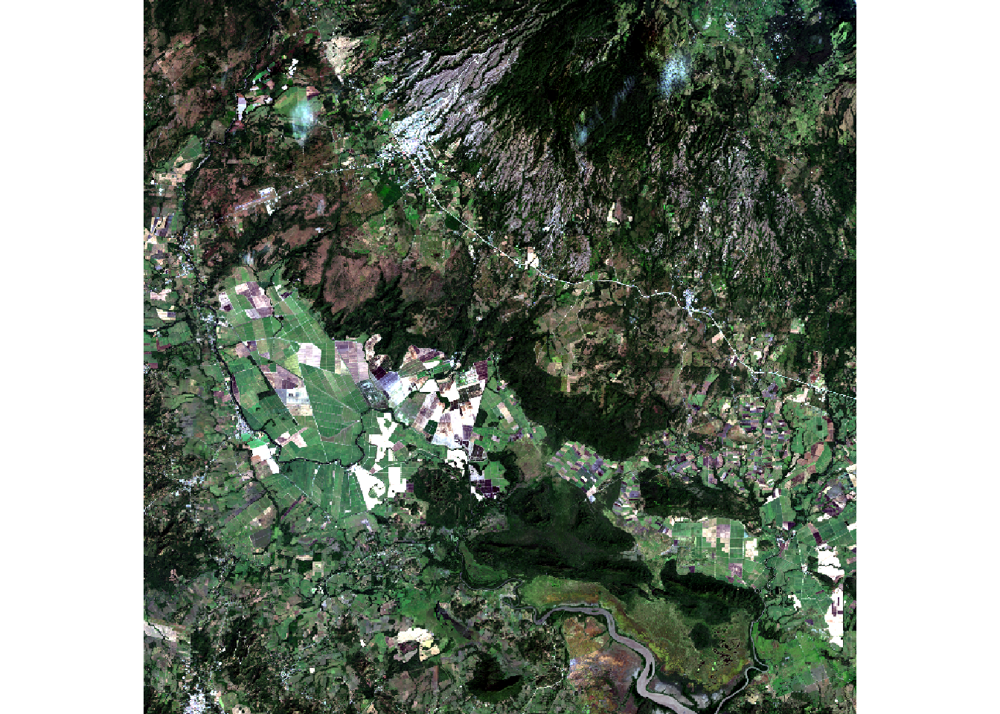
plotRGB(liberia, stretch="hist")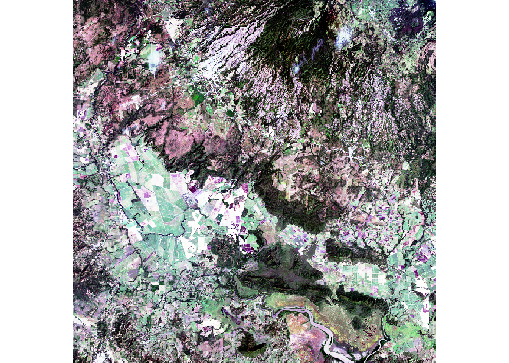
Expansión manual
El uso de hist() para mostrar un histograma de las distribuciones de valores en las diferentes bandas muestra el gran sesgo de las distribuciones, de modo que la mayoría de los valores se encuentran en el extremo inferior (oscuro) de la distribución en todas las bandas. Esto explica por qué el plotRGB() predeterminado es tan oscuro.
Esta función lee todos los valores de los archivos ráster y puede tardar unos segundos en completarse.
hist(rgb[[1]], main="Banda 1", xlab="Valor", ylab="Frecuencia")
hist(rgb[[2]], main="Banda 2", xlab="Valor", ylab="Frecuencia")
hist(rgb[[3]], main="Banda 3", xlab="Valor", ylab="Frecuencia")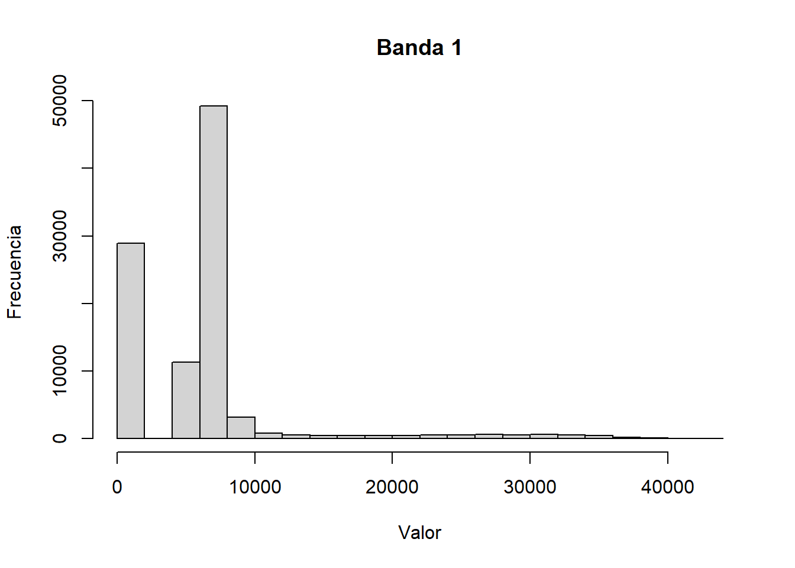
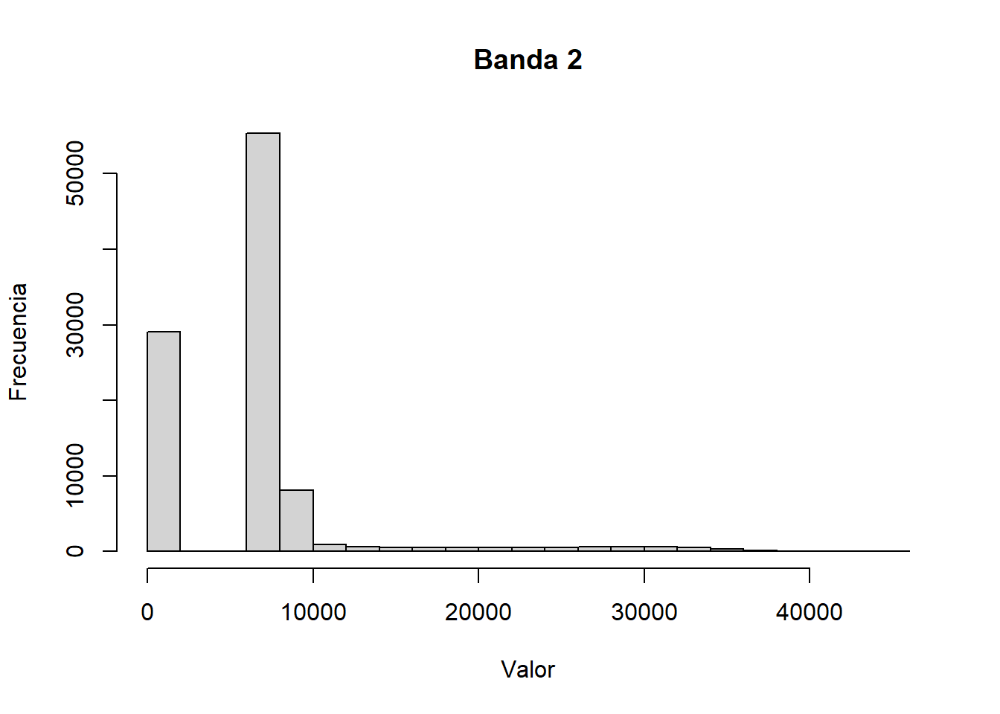
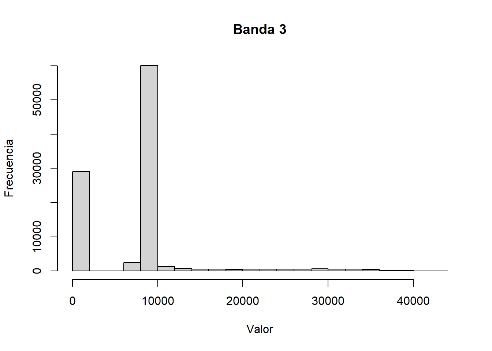
Con la información de la distribución de los datos en las bandas, es posible usar los parámetros zlim y scale para definir el rango de valores que se mostrarán. Los valores que se vean mejor dependerán del contenido de su escena específica.
Al realizar la operación
liberia - 6000se oscurece la escena general al restar 6000 de todos los píxeles para que la mayoría de los valores más bajos se recorten.El parámetro de escala (
scale) define el valor más alto en los datos. Probablemente debería ser el mismo que el valor máximo (ext) a menos que desee oscurecer específicamente la escena haciendo que el valor más alto mostrado sea menor que el valor más alto que el dispositivo puede representar.El parámetro
zlimdefine el rango de valores que se pueden procesar.
plotRGB(liberia - 5000, scale=12000, zlim=c(0, 12000))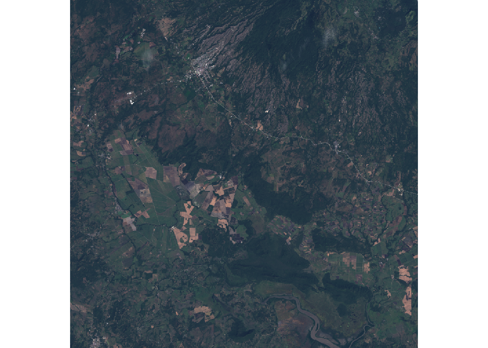
Ajuste de Niveles
La expansión manual realiza la misma operación en todos los valores, lo que puede desequilibrar los colores y dar a la escena un ligero matiz o neblina. Las bandas del ráster se pueden ajustar individualmente para nivelación y cambio del gamma.
El rango tonal de una imagen digital está relacionado con la cantidad de contraste presente en la imagen, con un rango tonal amplio que produce un buen contraste y un rango tonal estrecho que indica un contraste deficiente. El ajuste de niveles es un algoritmo de mejora de imágenes digitales que puede mejorar sustancialmente el rango tonal de una imagen digital, aumentando así el contraste general de la imagen.
Notas
- El
crop()debe realizarse antes de las operaciones matemáticas para reducir la cantidad de memoria necesaria para modificar los datos del ráster. - La resta y la división tienen el mismo propósito que el escalamiento por
xlimmínimo y máximo. - Es necesario restablecer los valores negativos a cero para evitar valores no válidos cuando se utilizan exponentes.
- Los exponentes realizan un estiramiento del gamma al cambiar los valores más bajos hacia arriba, para aclarar las áreas oscuras con verdes saturados en las área mayoritariamente agrícolas.
- Los valores por debajo de uno aumentan el desplazamiento de la curva y los valores por encima de uno disminuyen el desplazamiento.
- El escalamiento y el movimiento de los valores a un rango de cero a uno, se refleja en los parámetros
plotRGB().
blue <- raster("./LC08_L1TP_016053_20201227_20201227_01_RT/LC08_L1TP_016053_20201227_20201227_01_RT_B2.TIF")
green <- raster("./LC08_L1TP_016053_20201227_20201227_01_RT/LC08_L1TP_016053_20201227_20201227_01_RT_B3.TIF")
red <- raster("./LC08_L1TP_016053_20201227_20201227_01_RT/LC08_L1TP_016053_20201227_20201227_01_RT_B4.TIF")
blue = crop(blue, boundary)
green = crop(green, boundary)
red = crop(red, boundary)
blue = ((blue - 7000) / 10000)
green = ((green - 7000) / 10000)
red = ((red - 7000) / 10000)
blue[blue < 0] = 0
green[green < 0] = 0
red[red < 0] = 0
blue = blue^0.95
green = green^0.5
red = red^0.4
rgb = stack(red, green, blue)
plotRGB(rgb, scale=1, zlim=c(0, 1))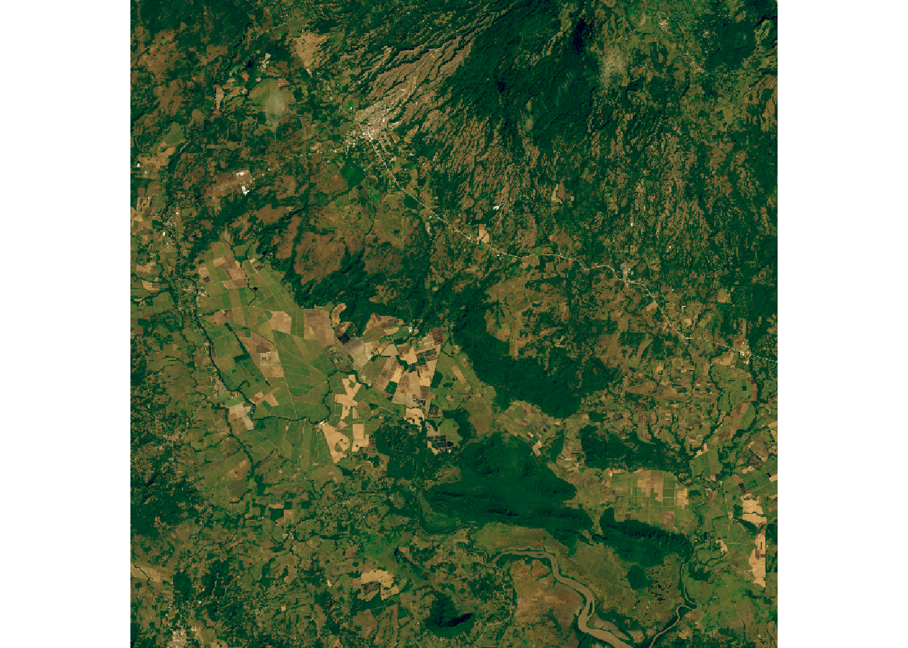
Escritura del nuevo raster
Si la imagen no existe, se guarda la imagen resultante en disco.
fname <- "./ras/aoi_l08_20201227_adj.bil"
if (!file.exists("Akshit.R")){
rgb.level <- writeRaster(rgb, filename = fname, datatype='FLT4S', bandorder='BIL', overwrite=TRUE)
}Otras combinaciones de bandas
Aunque la combinación RGB es la combinación de bandas más obvia para los datos de Landsat, la resolución espacial es muy baja (30 metros). Esto limita la calidad de la imagen de luz visible en comparación con otras fuentes contemporáneas de alta resolución, especialmente cuando se enfoca en áreas urbanas.
Sin embargo, los datos de las otras bandas infrarrojas y ultravioleta se pueden combinar con las bandas de luz visible en una variedad de formas para crear visualizaciones útiles por ejemplo para la biogeografía y la agricultura.
Color infrarrojo
Esta visualización utiliza el infrarrojo cercano (banda 5) como rojo, el rojo (banda 4) como verde y el verde (banda 3) como azul.
La vegetación saludable reflejan la luz infrarroja, por lo que la vegetación saludable es roja, las áreas sin vegetación o urbanizadas son blancas y las áreas oscuras son agua.
green <- raster("./LC08_L1TP_016053_20201227_20201227_01_RT/LC08_L1TP_016053_20201227_20201227_01_RT_B3.TIF")
red <- raster("./LC08_L1TP_016053_20201227_20201227_01_RT/LC08_L1TP_016053_20201227_20201227_01_RT_B4.TIF")
near.infrared = raster("./LC08_L1TP_016053_20201227_20201227_01_RT/LC08_L1TP_016053_20201227_20201227_01_RT_B5.TIF")
rgb = stack(near.infrared, red, green)
rgb = crop(rgb, boundary)
plotRGB(rgb, scale=65535, stretch="lin")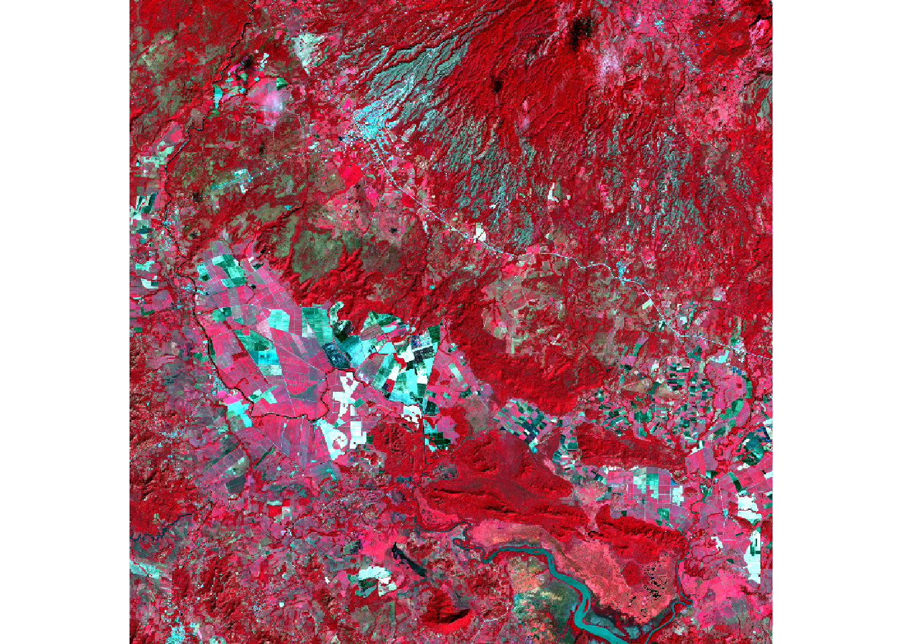
Infrarrojo de onda corta
Esta visualización alternativa utiliza el infrarrojo de onda corta 2 (banda 7) como rojo, el infrarrojo de onda corta 1 (banda 6) como verde y el rojo (banda 4) como azul.
La densidad de la vegetación está indicada por la oscuridad de los tonos de verde. Las áreas urbanas son azules y el suelo es marrón.
red <- raster("./LC08_L1TP_016053_20201227_20201227_01_RT/LC08_L1TP_016053_20201227_20201227_01_RT_B4.TIF")
sw.infrared.1 = raster("./LC08_L1TP_016053_20201227_20201227_01_RT/LC08_L1TP_016053_20201227_20201227_01_RT_B6.TIF")
sw.infrared.2 = raster("./LC08_L1TP_016053_20201227_20201227_01_RT/LC08_L1TP_016053_20201227_20201227_01_RT_B7.TIF")
rgb = stack(sw.infrared.2, sw.infrared.1, red)
rgb = crop(rgb, boundary)
plotRGB(rgb, scale=65535, stretch="lin")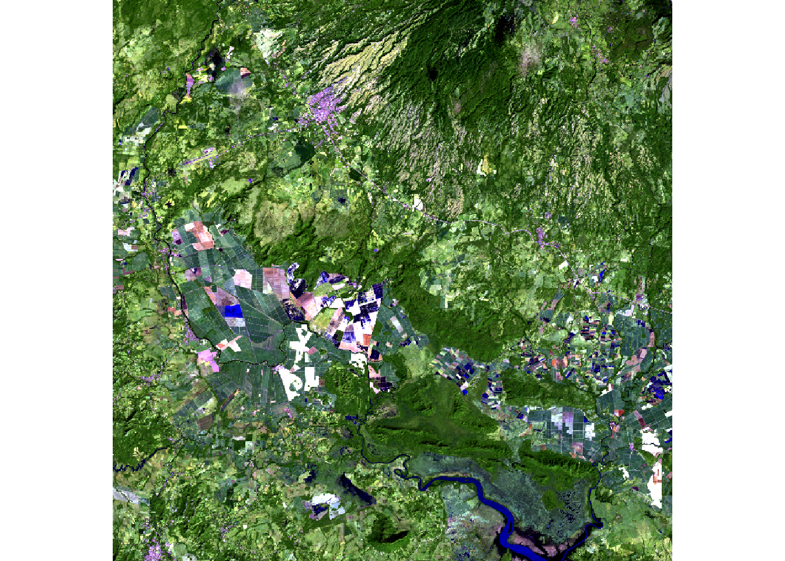